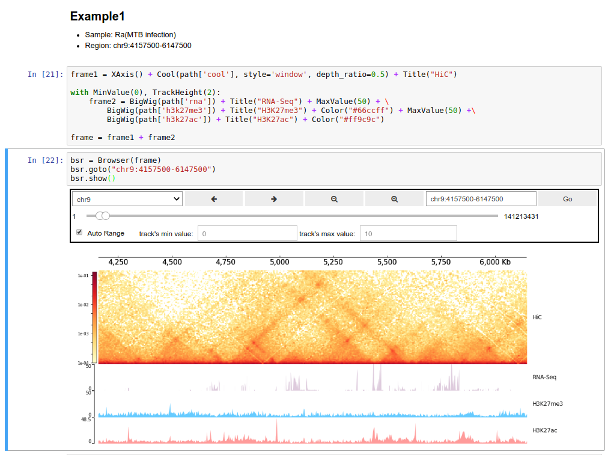
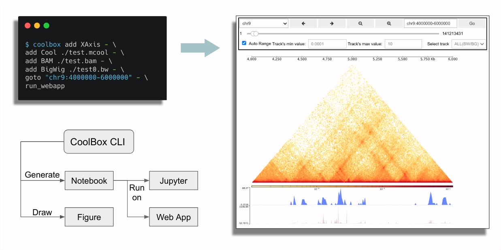

Installation & Usage¶
Install CoolBox¶
Recommend use conda to manage environments.
You can install from the bioconda channel:
$ conda install -c bioconda coolbox
Or install from the source code, by this way you can use the latest updated features:
$ git clone https://github.com/GangCaoLab/CoolBox.git
$ cd CoolBox
$ conda env create --file environment.yml
$ conda activate coolbox
$ python setup.py install
Another way is install from PyPI. But you should ensure these dependency is installed.
$ pip install coolbox
After installation, you should
enable ipywidgets to use the browser in Jupyter notebook:
$ jupyter nbextension enable --py widgetsnbextension
Usage¶
CoolBox can be use in two ways. Directly using its Python API or using the command line interface.
API¶
User can import coolbox in Jupyter notebook to
draw figures or compose a Browser object to
interactively explore their genomic data.

For this purpose, you can reference this
Quickstart (API) page.
Or just import coolbox as a
Python plot package use in their own plot
script.
CLI¶
Command line users can use CoolBox in a more convenient way. They can directly draw genomic track plot or compose browser by simple command line:

For Windows Users¶
Currently, CoolBox cannot be run natively on Windows. But you can use the WSL(Windows Subsystem for Linux) to run it. See this
Or, you can choose to use docker on Windows.
Docker¶
Pull the CoolBox docker image:
$ docker pull nanguage/coolbox
Run a container, with mount current directory in file system to the ‘/data’ in the container.
And binding the container port 8888 (jupyter default port) to the host port 9000:
$ docker run -ti -v $(pwd):/data -p 9000:8888 nanguage/coolbox:latest
Then run jupyter notebook in the container:
$ jupyter notebook --ip=0.0.0.0 --allow-root
## will print the token here
Then open http://127.0.0.1:9000/ with your browser, and type the token printed in the console.